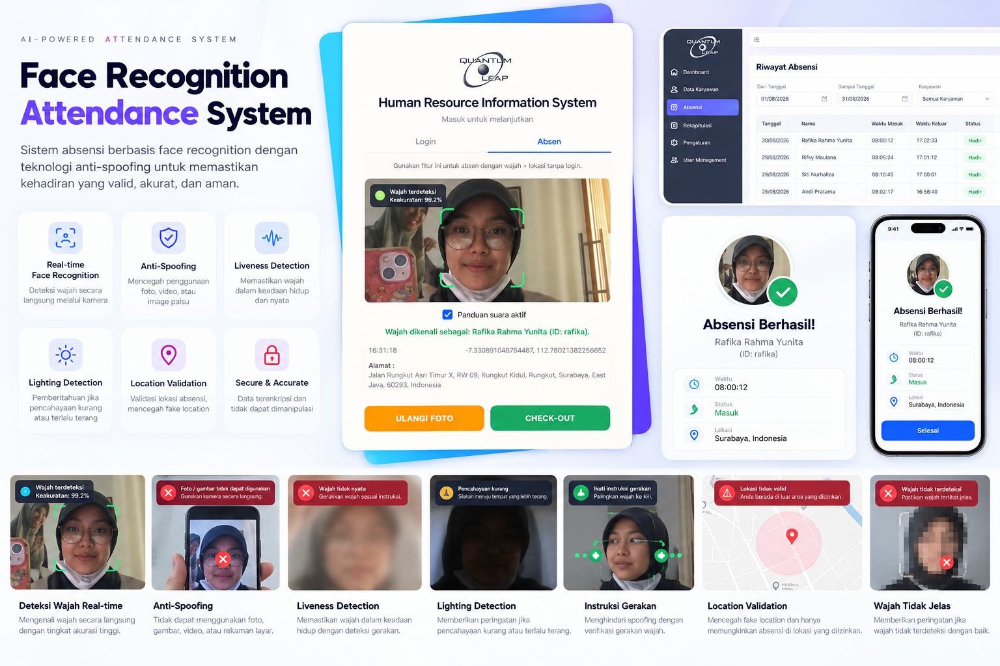

Face Recognition Attendance System
Sistem Absensi Real-Time Berbasis Face Recognition dengan Anti-Spoofing & Geolocation Validation

Face Recognition Attendance System adalah sistem absensi berbasis Artificial Intelligence dan Computer Vision yang dikembangkan untuk mengotomatisasi pencatatan kehadiran karyawan secara real-time menggunakan teknologi pengenalan wajah. Sistem ini dirancang dengan tingkat keamanan tinggi untuk mencegah berbagai bentuk kecurangan absensi.
Sistem mengintegrasikan face recognition, anti-spoofing, liveness detection, validasi geolocation, serta validasi perangkat dan pencahayaan dalam satu pipeline terpadu. Hasil absensi langsung terintegrasi ke sistem HRIS perusahaan, memungkinkan manajemen memantau kehadiran karyawan secara akurat dan efisien tanpa intervensi manual.
- Real-Time Face Recognition: Identifikasi wajah karyawan secara langsung menggunakan kamera perangkat dengan akurasi tinggi dan latensi rendah.
- Anti-Spoofing & Liveness Detection: Sistem mendeteksi dan menolak upaya penipuan menggunakan foto, video rekaman, maupun screen capture — hanya wajah asli dan hidup yang diterima.
- Validasi Pencahayaan: Sistem secara otomatis mendeteksi kondisi pencahayaan dan memberikan peringatan jika kondisi terlalu gelap atau terlalu terang, memastikan kualitas capture wajah optimal.
- Geolocation Validation: Validasi lokasi GPS karyawan untuk memastikan absensi dilakukan dari lokasi kerja yang ditentukan, mencegah fake location dan remote spoofing.
- Face & Device Validation: Sistem memvalidasi kombinasi identitas wajah dan perangkat terdaftar, sehingga absensi tidak dapat dilakukan dari perangkat yang tidak sah.
- Deteksi Wajah Tidak Jelas: Sistem otomatis mendeteksi wajah yang tidak terlihat jelas, terhalang, atau tidak terdeteksi, dan memberikan panduan kepada pengguna untuk memperbaiki posisi.
- Check-In & Check-Out: Mendukung proses check-in dan check-out harian secara terpisah dengan pencatatan waktu yang presisi.
- HRIS Attendance Integration: Hasil absensi otomatis tersinkronisasi dengan sistem HRIS perusahaan, menghilangkan kebutuhan input manual.
- Attendance History: Riwayat kehadiran karyawan dapat diakses dan dikelola melalui dashboard administrasi terintegrasi.
- Foto & Video Rejection: Model anti-spoofing membedakan wajah hidup dari foto diam atau video putar ulang menggunakan analisis tekstur dan gerakan mikro.
- Screen Capture Detection: Sistem mendeteksi dan memblokir upaya absensi menggunakan screen capture atau layar perangkat lain.
- Fake GPS Prevention: Validasi geolokasi menggunakan koordinat GPS real-time yang diverifikasi terhadap radius lokasi kerja yang dikonfigurasi.
- Device Binding: Setiap karyawan terhubung ke perangkat terdaftar; upaya absensi dari perangkat lain secara otomatis ditolak.
- Lighting Quality Check: Pemeriksaan otomatis terhadap kondisi pencahayaan sebelum proses face capture dilakukan untuk memastikan akurasi recognisi.
- Deep Face Recognition: Memanfaatkan DeepFace dan model deep learning untuk menghasilkan face embedding yang akurat dan robust terhadap variasi pencahayaan serta ekspresi wajah.
- OpenVINO Optimization: Model inference dioptimasi menggunakan Intel OpenVINO untuk performa real-time yang efisien pada hardware standar.
- TensorFlow Model Pipeline: Pipeline training dan evaluasi model menggunakan TensorFlow, mencakup preprocessing, augmentasi data, dan fine-tuning model.
- OpenCV Frame Processing: Pemrosesan frame kamera secara real-time menggunakan OpenCV untuk deteksi, cropping, dan normalisasi wajah.
- Liveness Score Evaluation: Setiap upaya absensi menghasilkan liveness score yang menentukan apakah input diterima sebagai wajah asli.
- Eliminasi Buddy Punching: Face recognition memastikan hanya karyawan yang bersangkutan dapat melakukan absensi atas namanya sendiri.
- Akurasi Kehadiran Tinggi: Data kehadiran lebih akurat karena tervalidasi secara biometrik, lokasi, dan perangkat secara bersamaan.
- Efisiensi Proses HR: Integrasi HRIS menghilangkan kebutuhan rekap absensi manual, menghemat waktu tim HR secara signifikan.
- Audit Trail Lengkap: Setiap transaksi absensi tercatat dengan timestamp, metadata lokasi, dan status validasi untuk keperluan audit.